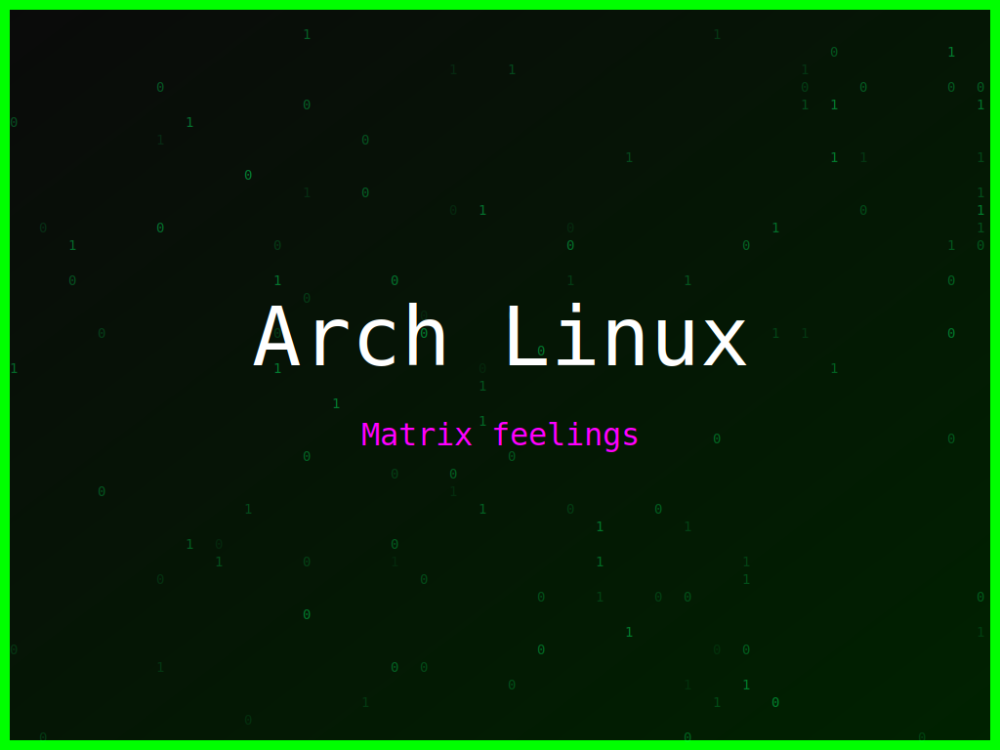

<section class="post-content">

    <div class="details-container">
       
        
        <ul class="details-list">
            <li><strong>Autor:</strong> piolinux</li>
            <li><strong>Descrição:</strong> Wallpaper Arch Linux com um toque futurista e colorido, perfeito para entusiastas do Git.</li>
            <li><strong>Distro:</strong> Arch Linux</li>
            <li><strong>Frases:</strong> Open Source rocks, Git push origin, Matrix feelings</li>
            <li><strong>Tags:</strong> matrix, colorido</li>
        </ul>
        <a href="../galeria.html">Voltar para a galeria</a>||
        <a href="../wallpaper4.svg" download="wallpaper-arch-linux-a-matriz-do-open-source.svg">Baixar Wallpaper</a>
    </div>


</section>
